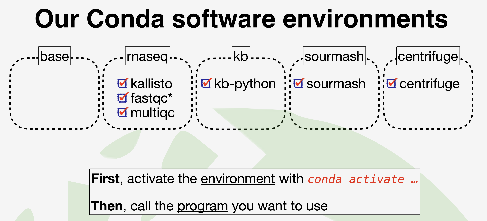

![]()
Install conda
### Download mambaforge or miniforge
wget https://github.com/conda-forge/miniforge/releases/latest/download/Miniforge3-Linux-x86_64.sh
### chmod
chmod +x ./Miniforge3-Linux-x86_64.sh
### Install to /home/usr/opt/miniforge3
bash ./Miniforge3-Linux-x86_64.sh
### Running a newer MacOS that uses the zsh shell.
conda init zsh Configuring conda
### Make sure conda works
conda info #to view all the details about your conda set-up
conda info --envs #to view all the environments available to you (note, since you just installed miniconda, you'll only have a 'base' environment available)
### initialize your shell
### Install mamba
conda install -c conda-forge mamba
### Access to various channels where many pre-packaged bioinformatics programs can be downloaded with all their dependencies
conda config --add channels defaults
conda config --add channels bioconda
conda config --add channels conda-forge
conda config --set offline falseCreate environment

### Conda environment makes managing dependencies much less frustrating
conda create --name rnaseq
conda activate rnaseq
### Install some commonly used RNA-seq software inside this environment
# conda config --add subdirs osx-64
# conda install -c bioconda kallisto # then install kallisto and centrifuge in their respective enivronments
# conda search -c conda-forge -c bioconda 'kallisto[subdir=osx-arm64]' # for M1 mac user
kallisto # test it works
conda install -c bioconda fastqc
conda install -c bioconda multiqcUsing R with Conda
### Create a new conda environment with all the r-essentials conda packages built from CRAN
conda create -n renv r-essentials r-base
### Activate the environment:
conda activate renv
### When using conda to install R packages, you will need to add r- before the regular package name.
conda install -c r r-{name_of_package}
### install a bioconductor package
conda install -c bioconda bioconductor-{name_of_package}
### Update all of the packages and their dependencies with one command
conda update r-caretUseful conda commands
conda list # shows you everything installed in your current environment
conda list -n [ENV NAME] # shows you everything installed in the specified environment
conda info --envs # Viewing a list of your environments
conda env list # Viewing a list of your environments
conda remove --name myenv --all # remove any environment (substitute your env name for 'myenv')
conda search myenv # search your channels for a specific package called 'myenv'
conda update --all # update conda
nano $HOME/.condarc # view your list of channels
Conda tips
We automatically get a ‘base’ environment after installing conda and we can find it when we open the terminal that you are placed in the base env by default.
- Not auto activate base environment
conda config --set auto_activate_base false- Avoid installing lots of software in base or, eventually, we will run into conflicts.